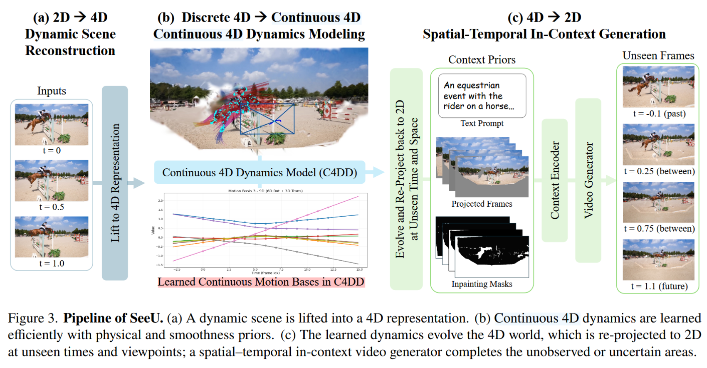
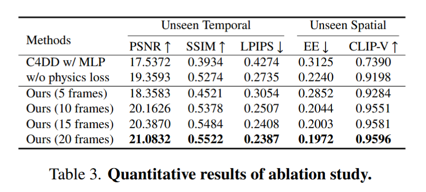

特点： *continuous 4D dynamic model / unseen time / unseen viewpoint
前提： focused on pronounced, smooth, and temporally stable foreground motion.
方案： monocular frame sequence - shape of motion - ==discrete 4D - b样条 - continuous 4D== - render - diffusion 补全。把一个离散的 4D 轨迹，通过 B 样条曲线，拟合成一个连续的 4D 表示。
SeeU 更像在学 structured motion subspace，而不是给每个 primitive 用 temporal MLP。
SeeU45是自己的数据集，由45个动态场景组成，源于自己的采集和公开资源。

2D - 4D: megasam (camera intrinsics / extrinsics / depth) - track-anything (foreground objects) - TAPIR (2D tracking) - 4D 表示（camera pose / gaussian）
不直接在 2D 上做视频生成。先从稀疏单目帧重建 4D Gaussian 场景，再把共享运动基和相机轨迹用 B-spline 参数化成连续时间的 C4DD（Continuous 4D Dynamics Model），最后回投到 2D 做时空 in-context video generation。
把 per-point deformation MLP 换成低秩运动基 + spline 连续化
Q1：“canonical 表示 + 连续时间形变”这一经典范式？
canonical 表示本质上就是一个不随时间变化的标准空间，这就像基底一样。后续所有时刻 t 的变化都是这个 canonical field 中的元素+一个时间 t 相关的形变量。在重建里这 canonical 表示就不一定是 NeRF 了，可以是 mash / point cloud / 3D gaussians / implicit field 等任意的一个场景的稳定本体。
如果每帧都单独建一个三维模型，模型就会重复学同一物体，参数冗余严重，而且时序一致性很差；引入 canonical 表示之后，模型就能把“身份、几何本体、稳定纹理”放进 canonical，把“位置变化、姿态变化、非刚体变形”交给形变场。
对于缓慢变化 / 局部平滑的运动，或者说有稳定的可追踪点（姿态变化/遮挡/局部接触），我们可以使用 canonical 进行建模，如果一个 canonical 不够的话也可以 multi canonical。但要是这个场景中包含突然出现与消失物体，或者拓扑变化，那就不能用 canonical 进行建模了，需要使用 4D radiance field / per-time primitives 等，让表示自己是允许东西突然出现与消失的。
Q2：motion bases？